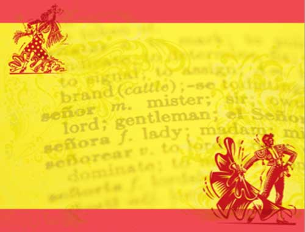

En un lugar de la Mancha, de cuyo nombre no quiero acordarme, no ha mucho tiempo que vivía un hidalgo de los de lanza en astillero, adarga antigua, rocín flaco y galgo corredor. Una olla de algo más vaca que carnero, salpicón las más noches, duelos y quebrantos los sábados, lantejas los viernes, algún palomino de añadidura los domingos, consumían las tres partes de su hacienda. El resto della concluían sayo de velarte, calzas de velludo para las fiestas, con sus pantuflos de lo mesmo, y los días de entresemana se honraba con su vellorí de lo más fino. Tenía en su casa una ama que pasaba de los cuarenta, y una sobrina que no llegaba a los veinte, y un mozo de campo y plaza, que así ensillaba el rocín como tomaba la podadera. Frisaba la edad de nuestro hidalgo con los cincuenta años; era de complexión recia, seco de carnes, enjuto de rostro, gran madrugador y amigo de la caza. Quieren decir que tenía el sobrenombre de Quijada, o Quesada, que en esto hay alguna diferencia en los autores que deste caso escriben; aunque, por conjeturas verosímiles, se deja entender que se llamaba Quejana. Pero esto importa poco a nuestro cuento; basta que en la narración dél no se salga un punto de la verdad.
Es, pues, de saber que este sobredicho hidalgo, los ratos que estaba ocioso, que eran los más del año, se daba a leer libros de caballerías, con tanta afición y gusto, que olvidó casi de todo punto el ejercicio de la caza, y aun la administración de su hacienda. Y llegó a tanto su curiosidad y desatino en esto, que vendió muchas hanegas de tierra de sembradura para comprar libros de caballerías en que leer, y así, llevó a su casa todos cuantos pudo haber dellos; y de todos, ningunos le parecían tan bien como los que compuso el famoso Feliciano de Silva, porque la claridad de su prosa y aquellas entricadas razones suyas le parecían de perlas, y más cuando llegaba a leer aquellos requiebros y cartas de desafíos, donde en muchas partes hallaba escrito: La razón de la sinrazón que a mi razón se hace, de tal manera mi razón enflaquece, que con razón me quejo de la vuestra fermosura. Y también cuando leía: ...los altos cielos que de vuestra divinidad divinamente con las estrellas os fortifican, y os hacen merecedora del merecimiento que merece la vuestra grandeza.
Con estas razones perdía el pobre caballero el juicio, y desvelábase por entenderlas y desentrañarles el sentido, que no se lo sacara ni las entendiera el mesmo Aristóteles, si resucitara para sólo ello. No estaba muy bien con las heridas que don Belianís daba y recebía, porque se imaginaba que, por grandes maestros que le hubiesen curado, no dejaría de tener el rostro y todo el cuerpo lleno de cicatrices y señales. Pero, con todo, alababa en su autor aquel acabar su libro con la promesa de aquella inacabable aventura, y muchas veces le vino deseo de tomar la pluma y dalle fin al pie de la letra, como allí se promete; y sin duda alguna lo hiciera, y aun saliera con ello, si otros mayores y continuos pensamientos no se lo estorbaran. Tuvo muchas veces competencia con el cura de su lugar -que era hombre docto, graduado en Sigüenza-, sobre cuál había sido mejor caballero: Palmerín de Ingalaterra o Amadís de Gaula; mas maese Nicolás, barbero del mesmo pueblo, decía que ninguno llegaba al Caballero del Febo, y que si alguno se le podía comparar, era don Galaor, hermano de Amadís de Gaula, porque tenía muy acomodada condición para todo; que no era caballero melindroso, ni tan llorón como su hermano, y que en lo de la valentía no le iba en zaga.
En resolución, él se enfrascó tanto en su letura, que se le pasaban las noches leyendo de claro en claro, y los días de turbio en turbio; y así, del poco dormir y del mucho leer, se le secó el celebro, de manera que vino a perder el juicio. Llenósele la fantasía de todo aquello que leía en los libros, así de encantamentos como de pendencias, batallas, desafíos, heridas, requiebros, amores, tormentas y disparates imposibles; y asentósele de tal modo en la imaginación que era verdad toda aquella máquina de aquellas sonadas soñadas invenciones que leía, que para él no había otra historia más cierta en el mundo. Decía él que el Cid Ruy Díaz había sido muy buen caballero, pero que no tenía que ver con el Caballero de la Ardiente Espada, que de sólo un revés había partido por medio dos fieros y descomunales gigantes. Mejor estaba con Bernardo del Carpio, porque en Roncesvalles había muerto a Roldán el encantado, valiéndose de la industria de Hércules, cuando ahogó a Anteo, el hijo de la Tierra, entre los brazos. Decía mucho bien del gigante Morgante, porque, con ser de aquella generación gigantea, que todos son soberbios y descomedidos, él solo era afable y bien criado. Pero, sobre todos, estaba bien con Reinaldos de Montalbán, y más cuando le veía salir de su castillo y robar cuantos topaba, y cuando en allende robó aquel ídolo de Mahoma que era todo de oro, según dice su historia. Diera él, por dar una mano de coces al traidor de Galalón, al ama que tenía, y aun a su sobrina de añadidura. .